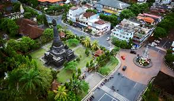
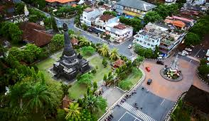

Desa Kamasan
terdapat Desa Kamasan, yang terkenal sebagai pusat seni lukis tradisional Bali. Di desa ini, para seniman masih melestarikan teknik melukis klasik yang diwariskan secara turun-temurun. Wisatawan bisa melihat langsung proses pembuatan lukisan atau bahkan ikut belajar melukis bersama para seniman lokal.


 
